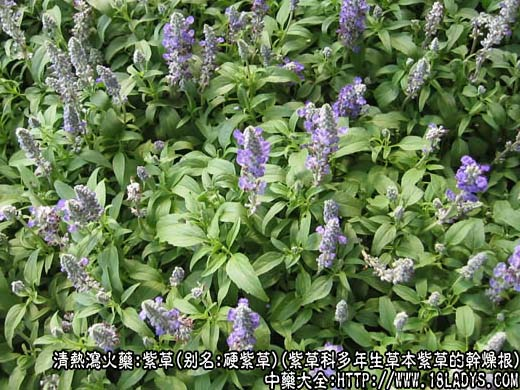
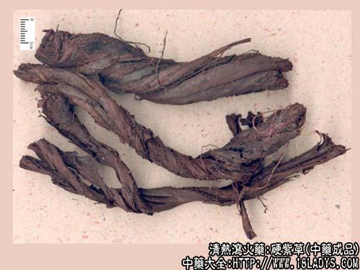
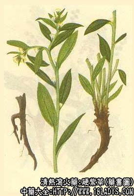

紫草为常用中药，《神农本草经》列为上品。其花紫，根紫，可以染紫色故名。全国大部分地区习用商品，主要有软紫草和硬紫草两类。
1、软紫草
别名：软苗紫草。
来源：为紫草科多年生草本植物新疆紫草的干燥根，野生。
产地：新疆。
性状鉴别：根呈扭曲不直的圆柱形，有时数个支根扭卷在一起，根头上有残留茎基。长6～12厘米，直径2～3厘米，全体暗紫色，皮部极疏松，呈条形鳞片，层层重迭，极易剥落。体轻，质松软易折断。断面木质部不明显。商品多破碎成片状。气特殊，味淡微酸。以根条肥大体松软者为佳。
2、硬紫草
别名：硬苗紫草，紫根。
来源：为紫草科多年生草本植物紫草的干燥根，野生。
产地：主产于东北，内蒙古、河北、河南、山西、陕西、甘肃、湖南、广西、贵州等地亦有分布。
性状鉴别：根呈扭曲不直的圆锥形，根头较大，有分歧的茎残基，常常有侧根。长7～15厘米。表面有紫红色，粗糙。有不规则的纵沟。皮薄层少，稍呈鳞片状剥离，不能剥成大片。质硬而轻脆，易折断。断面边缘深紫色，微显层纹，中间木心灰黄色。气微臭。味微甘而酸。
以根条粗长、色紫、皮厚、木心小者为佳。
主要成分：含乙酰紫草素，水解后得紫草素，结构以维生素K，为萘醌衍生物。
功效与作用：解毒、透疹。据现代实验，其效能与其强心、解热作用有关。
1、强心。动物实验证实紫草根对心脏有明显的兴奋作用。这一作用有利于促进外周血液循环，促使毒素较快排泄，因而可能就是紫草能透发痘疹的理论根据。
2、解热。有缓和的解热作用。
3、抗真菌。10%生理盐水紫草浸液对羊毛状小芽孢癣菌等有抗菌作用。
4、抗病毒。紫草素对流感病毒有抑制作用。
5、抗垂体促性腺激素和抗绒毛膜促性腺激素。经动物实验，初步证实有明显作用。现代还观察到紫草有预防麻疹和治疗湿疹性皮炎、女阴道炎等作用，但原理尚未明了，值得进一步研究。
炮制：生用。
归经：入心、肝二经。
性味：甘、咸、寒。
功能：清热凉血，透疹解毒。
主治：斑疹瘟毒，预防麻疹有良效，外用治皮肤疮溃疡及烫伤。
临床应用：为痘疹要药。
1、用于透发痘疹。婴儿麻疹、痘疹三四日，如疹隐隐色红，将出而未出，大便秘结，用紫草鞥帮助透疹而使病热减轻。方如紫草红花饮。但如有腹泻便溏，疹已出而红活者不要使用。用于预防麻疹，可用紫草9g、甘草3g，水煎服。隔天一次，共服三次。
2、外用紫草油（将紫草溶于植物油中而得），治湿疹和女阴炎。
用量：3～9g。
处方举例：紫草红饮：紫草6g，藏红花0.9g（泡），垂丝柳6g，连翘9g，金银花9g，大青叶9g，紫花地丁9g，淡竹叶9g，浙贝母9g，甘草3g，水煎服。
注：1、紫草除上列软、硬两种外，尚有四川，云南，贵州所处的滇紫草，当地已有较长时期的药用习惯，青海，广东也在使用。根呈扭曲不直的圆柱形。表面栓皮呈层片状，紫褐色或紫红色不鲜艳。根皮易脱落，呈不规则的层片状。体轻质硬易折断。断面黄白色。气微味微酸。此种根的外皮为不规则大小不等的片状物，常数层相连，外皮粗糙内表皮较平滑，商品中称滇紫草皮。
内蒙古紫草：性状与新疆紫草近似，惟颜色较浅，呈淡紫色或红色。
新疆还使用当地所产的天山紫草和帕米尔紫草。
在广东通用的中药名称中，包含有“紫草”二子的有三种不同的药物，要加以鉴别：1、红条紫草，即本项所述的紫草科植物紫草（紫草根）；2、北紫草，是白头翁的其中一个品种，毛茛科植物委陵菜；3、紫草茸。
2、紫草的品种较多，但均为紫草科的几个不同属植物。根历代本草描述，应以硬紫草为正品。京、津则软、硬两种紫草都用，但以软紫草为主。